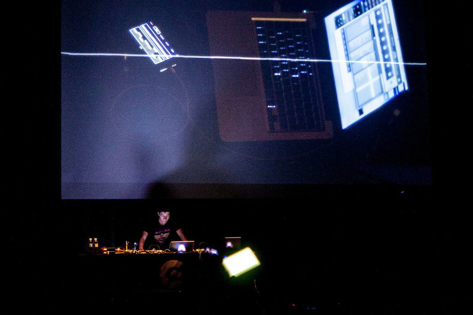

Centro Cultural de España, Mexico City.
Transmitter is an experimental sound performance that
involves constant communication between two people. One performer
utilizes multiple LCD monitors and screens as a musical instrument and
to display visual output, and the other controls the parameters of
generative patches composed in Pure Data that create the overall
soundscape.
The main monitor instrument uses an
accelerometer, a gyroscope, and a contact microphone, taking advantage
of the performer's physical movement to send data relating to the
instrument's angle, direction, velocity, and vibration.
This performance has had several iterations and is in collaboration with Isaac Medina.